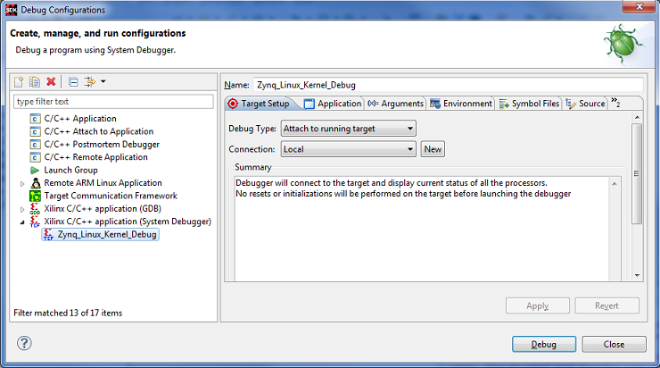
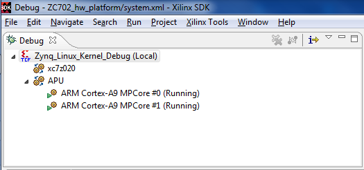
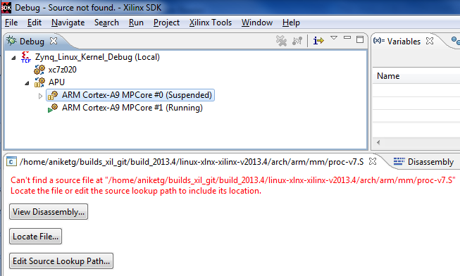
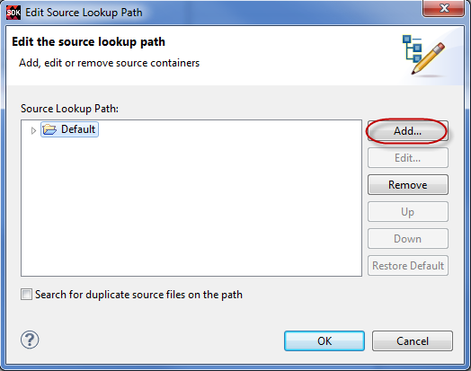
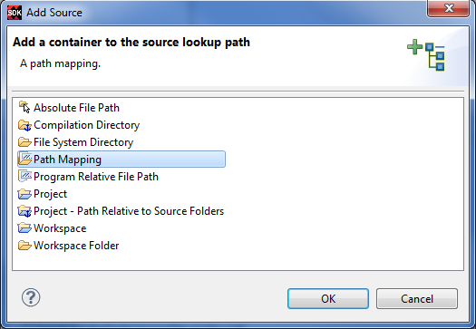
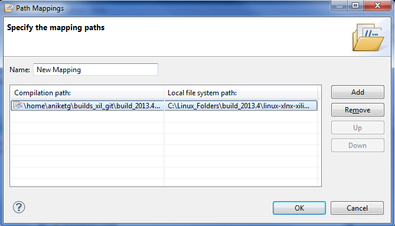
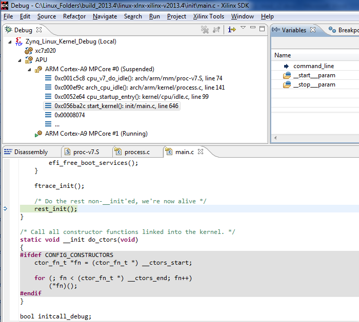
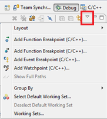
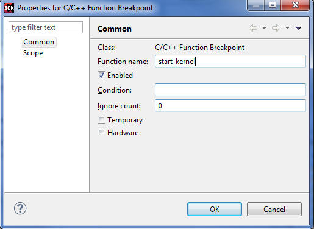
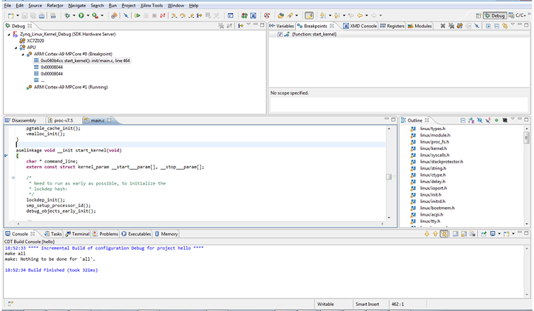

It is possible to debug the Linux kernel using the Xilinx® System Debugger. Follow the steps below to attach to the Linux kernel running on the target and to debug the source code.
CONFIG_DEBUG_KERNEL=y CONFIG_DEBUG_INFO=y









